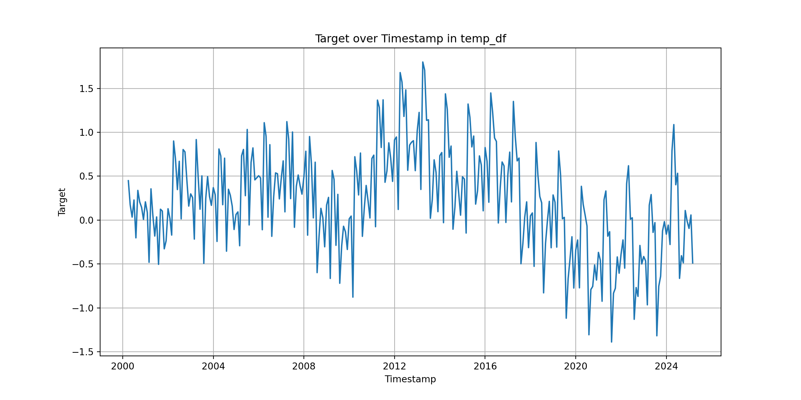

In this tutorial we build a 1-D Convolutional Neural Network (CNN) to forecast a single time series (univariate forecasting).
The goal is to show the full workflow:
Import and visualize a CPI series.
Preprocess the data (optional log/scale/difference).
Turn the series into sliding windows for a CNN.
Build and train a simple 1-D CNN model.
Evaluate the model on a hold-out test set.
Show the code
import numpy as npimport osimport pandas as pdimport matplotlib.pyplot as pltfrom sklearn.preprocessing import StandardScalerfrom tensorflow.keras.models import Sequentialfrom tensorflow.keras.layers import Conv1D, MaxPooling1D, Flatten, Densefrom sklearn.metrics import mean_absolute_error, mean_squared_error
Import data
In this example we use a CPI dataset stored locally in cpi_series.csv. From this file we select a single series (item_id == “Seasonal_1”) and split it into a training part (first 80% of observations) and a test part (last 20%). Before building any model, it is important to look at the raw series. Here we convert the timestamp column to a proper date type and plot the selected CPI series over time to get a sense of its level, trend and volatility.
temp_df['timestamp'] = pd.to_datetime(temp_df['timestamp'])plt.figure(figsize=(12, 6))plt.plot(temp_df['timestamp'], temp_df['target'])plt.xlabel('Timestamp')plt.ylabel('Target')plt.title('Target over Timestamp in temp_df')plt.grid(True)plt.show()

Auxiliary Functions
To keep the workflow clean, we separate the major tasks into helper functions:
Preprocessing functions – optional log-transform, differencing, and scaling.
Window creation – converting a raw series into fixed-length input sequences.
Model construction – building a 1-D CNN for forecasting.
Plotting utilities – visualizing predictions.
This modular structure makes the notebook easier to maintain and allows you to reuse components across different experiments.
A 1-D Convolutional Neural Network can extract short-range temporal patterns from a time series in much the same way that a 2-D CNN extracts spatial features from images.
The idea is simple: - The Conv1D layers learn local patterns across the last ( W ) observations (trend shapes, small cycles, short spikes). - MaxPooling reduces noise and compresses the learned features. - A Dense layer maps these learned features into a forecast for the next value.
The model defined below contains: 1. Two initial convolutional layers with ReLU activation. 2. A max-pooling layer. 3. A deeper convolutional layer. 4. A flattening step followed by a dense hidden layer. 5. A final dense output neuron producing a single next-step forecast.
A CNN expects a fixed-width input segment, similar to how images have fixed dimensions. For a time series, the equivalent is a sliding window of length W:
The window is the input, containing the last W observations.
The target is the next observation immediately following the window.
This converts a single long series into many supervised examples.
Show the code
def make_windows_train(train_processed, W): X_train = [] y_train = [] n =len(train_processed)# Slide a window of length W across the training setfor i inrange(n - W): X_train.append(train_processed[i : i + W]) y_train.append(train_processed[i + W]) X_train = np.array(X_train) y_train = np.array(y_train)# Reshape for CNN: (samples, W, 1) X_train = X_train.reshape(-1, W, 1)return X_train, y_trainimport numpy as npdef make_windows_test(train_processed, test_processed, W): X_test = [] y_test = []# Take the last W values from the training set last_train_window = train_processed[-W:]# Total test length n_test =len(test_processed)# Create rolling windows over the test setfor i inrange(n_test):if i ==0:# First test window uses only train history window = last_train_windowelse:# Next windows slide forward into test_processed# Combine tail of last train values with part of test window = np.concatenate([ last_train_window[i:], # decreasing slice of train test_processed[:i] # increasing slice of test ])# Ensure window is exactly length W window = window[-W:] X_test.append(window) y_test.append(test_processed[i]) X_test = np.array(X_test) y_test = np.array(y_test)# Reshape for CNN: (samples, W, 1) X_test = X_test.reshape(-1, W, 1)return X_test, y_test
Convert the processed series into sliding windows of length ( W ), which form the inputs for the CNN.
The window length ( W ) controls how much historical information the model sees for each prediction.
In this example the model uses the past 36 observations to predict the next one.
With the data prepared and the network architecture defined, we can now train the CNN.
Training consists of two steps:
Build the model with the chosen window size ( W ).
Fit the model on the windowed training data.
The training call uses: - validation_split=0.1 to monitor performance on unseen data during training, - epochs=50 and batch_size=16 as reasonable defaults for a small univariate series.
Once the CNN is trained, we can use it to generate predictions for the entire test set.
Since the model was trained on preprocessed data, the predictions must be converted back to the original scale to make them interpretable.
The evaluation workflow consists of:
Predicting on the test windows.
Inverting all preprocessing steps (scaling, log-transform, differencing).
Plotting predicted vs. actual values on the original scale.